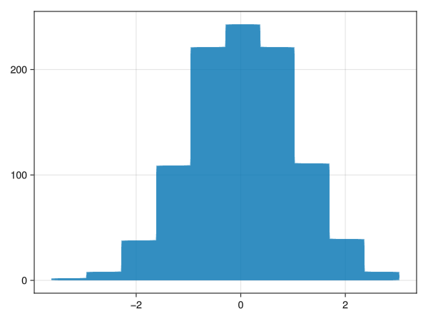
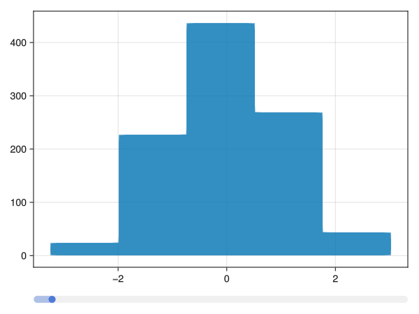
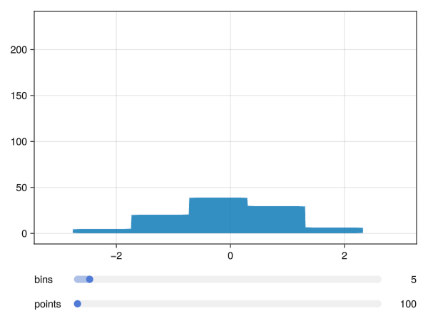

Interactive Histogram
Purpose
Build an interactive histogram from a static one.
Static Histogram
f = Figure()
o_data = randn(1000);
o_bins = 10;
hist!(Axis(f[1,1]), o_data, bins = o_bins) 
Saving the histogram is done by
julia> save("hist1.png", f)Dynamic bins
The slider has it's value as an observable as the value slot. Note that the call to hist! is un-changed.
f = Figure()
sl1 = Makie.Slider(f[2,1], range = 1:100, startvalue = 5)
o_bins = sl1.value
o_data = randn(1000);
hist!(Axis(f[1,1]), o_data, bins = o_bins) 
Generating the animation is done using the record function and forcing the slider using set_close_to:
force = [5:95; 95:-1:5]
record(f, "hist2.gif", force; framerate = 20) do b
set_close_to!(sl1, b)
endAnnotated sliders
If we use SliderGrid, we get multiple sliders, and annotation of name and value:
f = Figure()
sg = SliderGrid(f[2,1],
(label = "bins", range = 1:100, startvalue=5),
(label = "points", range = 100:1:1000, startvalue=500),
)
o_bins = sg.sliders[1].value
o_data = @lift randn($(sg.sliders[2].value))
hist!(Axis(f[1,1]), o_data, bins = o_bins) 
Note, the call to hist!() is still the same.
We can animate both using zip
force1 = [5:95; 95:-1:5]
force2 = [100:10:1000; 1000:-10:100]
force = zip(force1, force2)
record(f, "hist3.gif", force; framerate = 20) do b
set_close_to!(sg.sliders[1], b[1])
set_close_to!(sg.sliders[2], b[2])
end